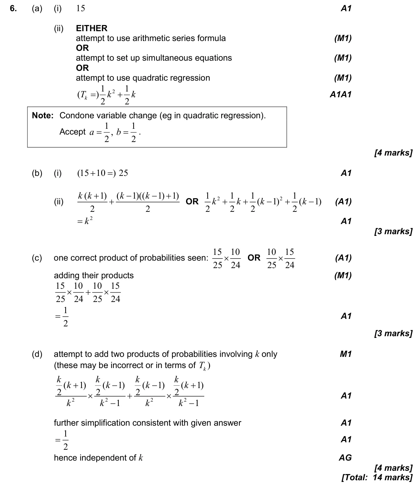

1.2 Arithmetic sequences and series4.6 Combined, mutually exclusive, conditional, independence and probability diagrams
Question

Markscheme

14 marks - May P2 TZ2 - Mathematics: Applications and Interpretation HL
